StreamView Analytics es una plataforma de streaming por suscripción con presencia en Latinoamérica, fundada en 2018, que incorpora semanalmente nuevas producciones de distintos países e idiomas. El crecimiento del catálogo generó un problema de gestión de la información: cada área usa reportes construidos con criterios diferentes, existen múltiples versiones de un mismo indicador y las decisiones de adquisición se toman con información parcial (problemas 1, 3 y 6 del caso). La Gerencia de Contenidos y Adquisición no puede identificar con rapidez qué géneros, países y contenidos tienen mayor potencial, y los dashboards existentes presentan exceso de información y poca interacción (problema 7).
Pregunta de negocio que guía el proyecto: ¿Qué tipo de contenido, de qué géneros y de qué mercados debería adquirir y priorizar StreamView para tener un catálogo más popular y mejor evaluado?
Objetivo general. Diseñar e implementar una solución de Visual Analytics que comunique la composición, popularidad, valoración y rentabilidad del catálogo para apoyar las decisiones de adquisición de la Gerencia de Contenidos.
Audiencia principal: Gerente de Contenidos y Adquisición. Responsable de evaluar oportunidades de incorporación de títulos, negociar licencias con estudios y definir la composición futura del catálogo. Perfil: experto en el negocio audiovisual, no en estadística; necesita respuestas rápidas, comparables y accionables.
| Necesidad de la audiencia | Cómo la responde la solución |
|---|---|
| ¿Qué géneros adquirir? | Brecha oferta/demanda + matriz de oportunidad con detalle por género (clic) |
| ¿Qué mercados tienen potencial? | Mapa, ranking de popularidad por país con Latinoamérica destacada, calificación por país |
| ¿Qué riesgo financiero asumo? | ROI mediano por género y por tramo de presupuesto, éxitos de bajo presupuesto |
| ¿Qué títulos destacar? | Rankings de popularidad, calificación ponderada y votos |
Propósito comunicacional: persuadir con evidencia para reorientar la política de adquisición. Por eso cada gráfico tiene un título-hallazgo (la conclusión, no el tema), un subtítulo con período y alcance (regla 7), un color de foco sobre gris de contexto para guiar la mirada, y lenguaje de negocio en español. Audiencias secundarias: Directorio (vista Resumen ejecutivo) y Marketing (rankings y mercados).
Se usaron exclusivamente las dos fuentes oficiales del caso: Netflix Movies Detailed up to 2025 (16.000 películas,
18 variables) y Netflix TV Shows Detailed up to 2025 (16.000 series, 16 variables), con metadatos de TMDB.
Ambas se integraron en un catálogo unificado de 32.000 títulos más tres tablas derivadas (géneros, países y personas,
porque son campos multivalor). Variables relevantes: type, genres, country,
language, release_year, date_added, popularity, vote_average,
vote_count, budget, revenue, director, cast.
uidLas dos fuentes comparten 16 variables y se apilan en una sola tabla (catalogo); como los show_id
de TMDB se repiten entre películas y series, la clave es uid. Los campos con varios valores por título
("Drama, Romance"; "Reino Unido, Estados Unidos") se separan en tablas relacionadas 1:N por uid; así un título
cuenta en cada uno de sus géneros o países, y todos los filtros del dashboard se propagan entre tablas por esa clave.
| Variable (→ derivada) | Disponible en | Uso en el análisis |
|---|---|---|
type → tipo | Ambos | Separar y comparar películas vs series (regla 2) |
genres → género armonizado | Ambos | Oferta vs demanda por género, matriz de oportunidad |
country, language | Ambos | Mercados, mapa, idiomas |
popularity → percentil dentro del tipo | Ambos | Demanda relativa (índice TMDB, no reproducciones) |
vote_average + vote_count → nota, nota ponderada | Ambos | Calidad percibida (≥ 10 votos) |
release_year, date_added | Ambos | Composición en el tiempo, estacionalidad |
budget, revenue → ROI, tramo | Solo películas | Riesgo y retorno de inversión (reglas 3, 6 y 9) |
director, cast | Ambos (69% sin director en series) | Talento más frecuente |
Popularidad relativa (0–100). Para comparar películas y series —cuya popularidad TMDB se calcula en escalas distintas— cada título recibe su posición dentro de su tipo: 50 es el título típico y 80 significa que es más popular que el 80% de los títulos de su tipo. Para un género o país se informa la del título típico del grupo.
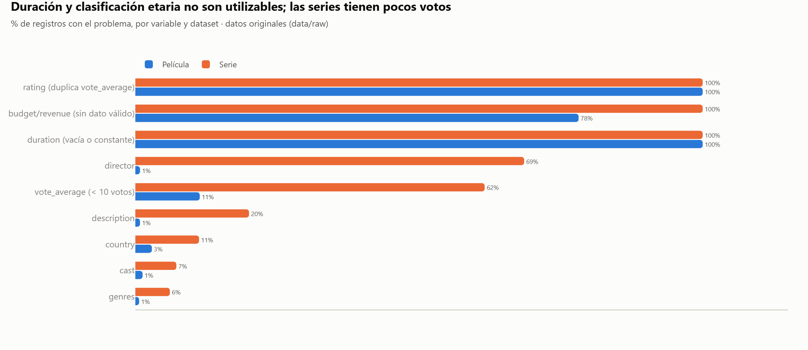
| Problema detectado | Decisión |
|---|---|
rating = vote_average en el 100% (no es clasificación etaria) | Excluida → los KPIs de clasificación etaria no son calculables (limitación reportada) |
duration vacía (películas) o constante '1 Seasons' (series) | Excluida |
| 'Sin información' como texto (69% director en series) | Convertido a nulo; limitación indicada en los gráficos |
397 show_id repetidos entre películas y series | Clave única uid = tipo + id |
| Calificaciones con pocos votos (mediana de 4 votos en series) | nota solo con ≥ 10 votos (64% de los títulos; 38% de las series) + calificación bayesiana para rankings |
| Popularidad muy asimétrica; escalas distintas por tipo | Mediana, percentil dentro de cada tipo, escala log |
| Exactamente 1.000 títulos por año y tipo (muestra estratificada) | Se analiza composición, no volumen |
| Presupuestos de USD 1–7.000 con ingresos millonarios (errores) | Universo financiero: budget ≥ USD 100 mil y revenue > 0 → 3.500 películas |
| Géneros con taxonomías distintas entre tipos | Taxonomía armonizada en español para comparar (regla 2) |
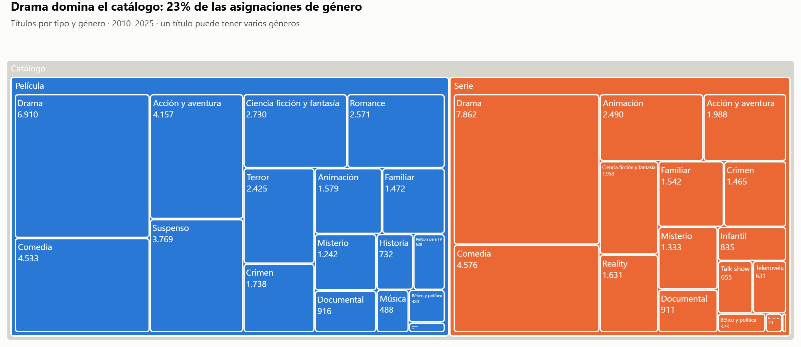
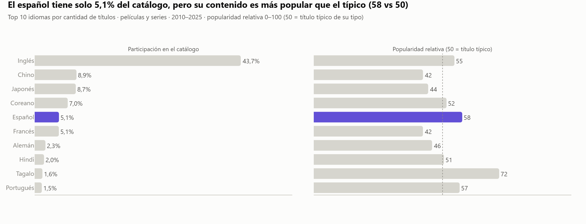
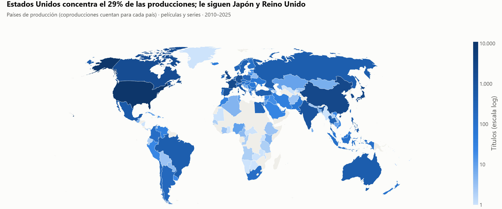
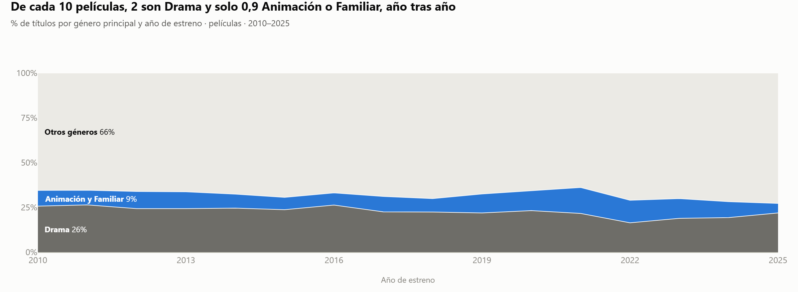
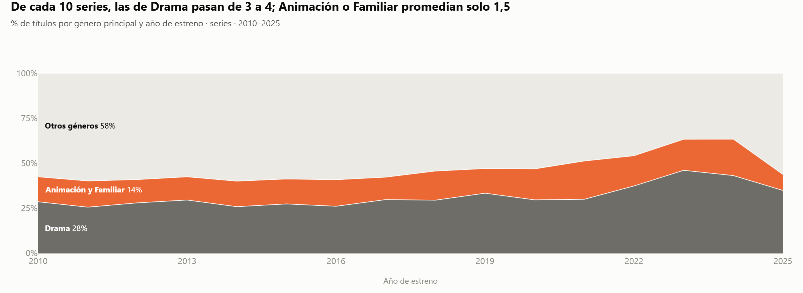
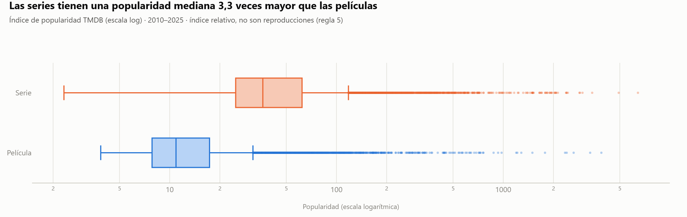
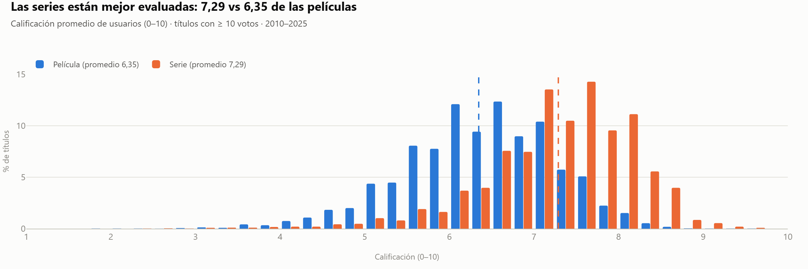
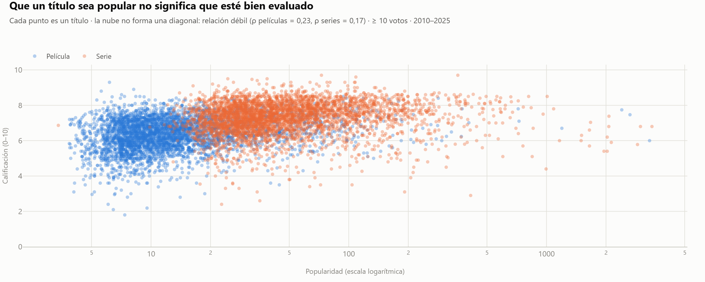
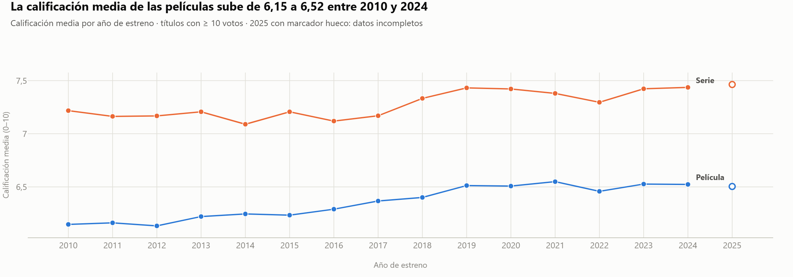
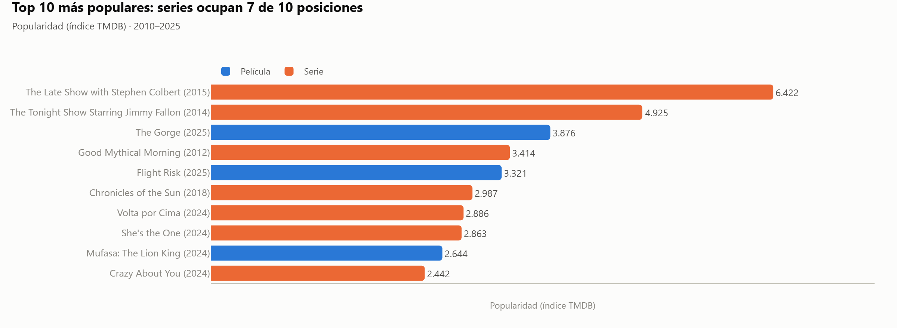
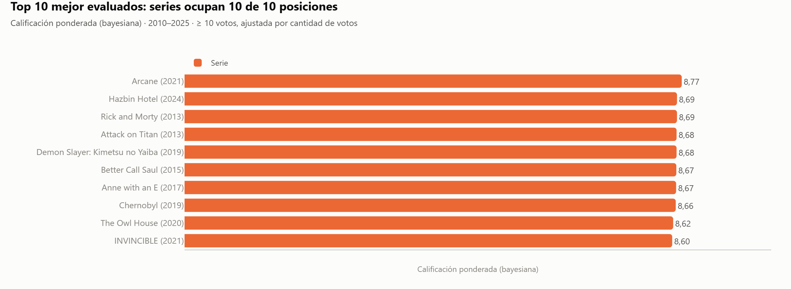
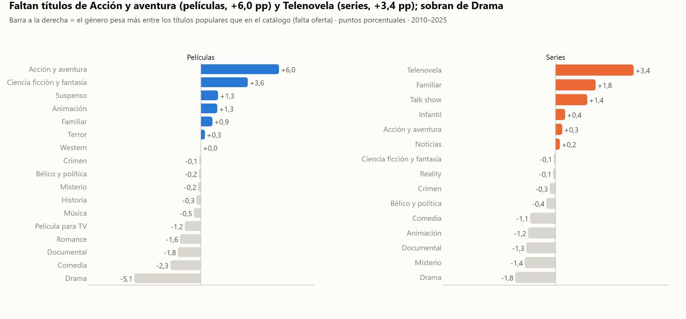
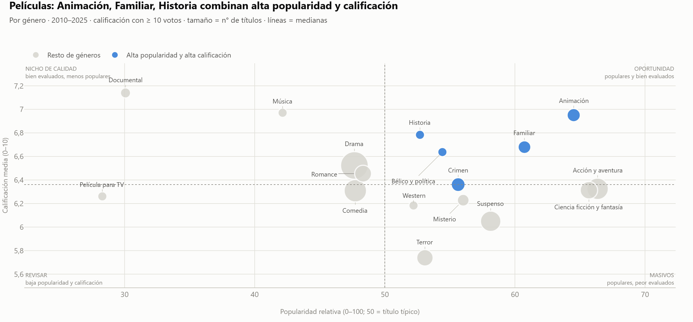
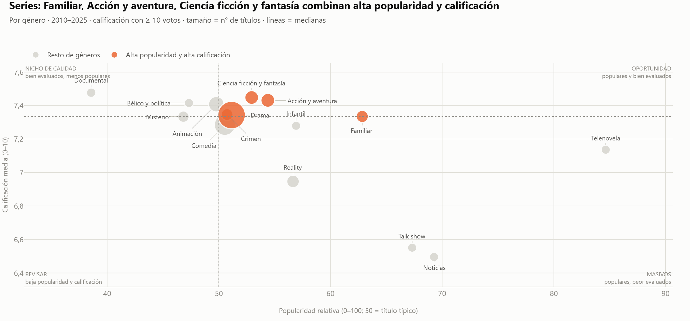
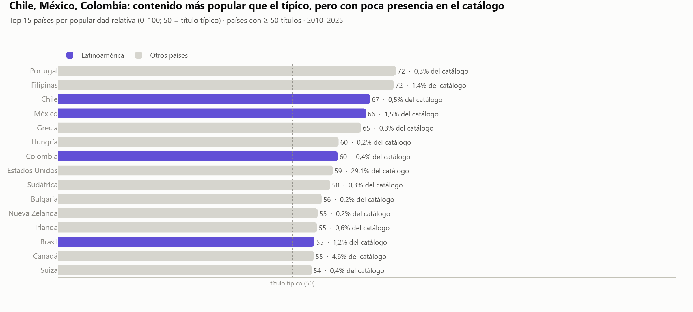
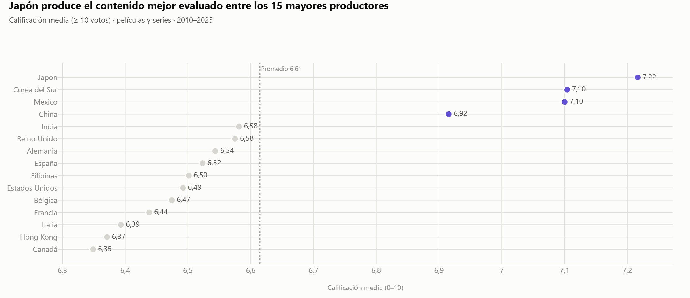
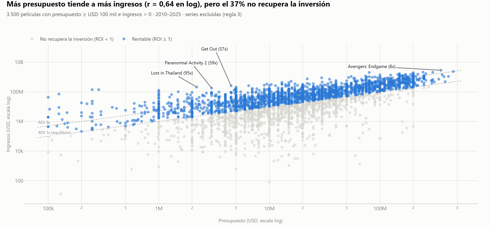
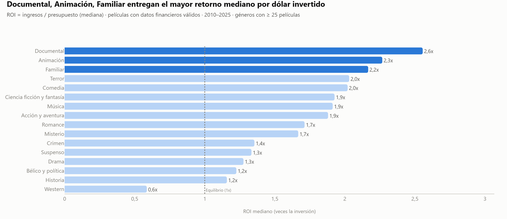
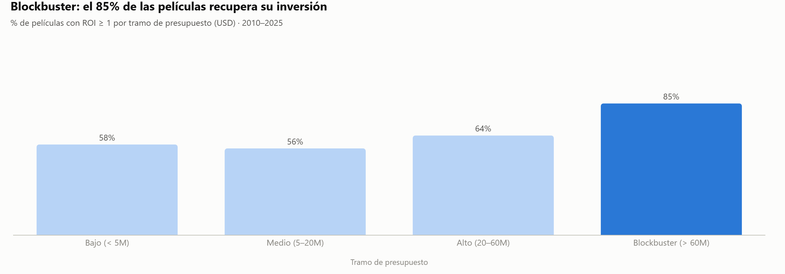
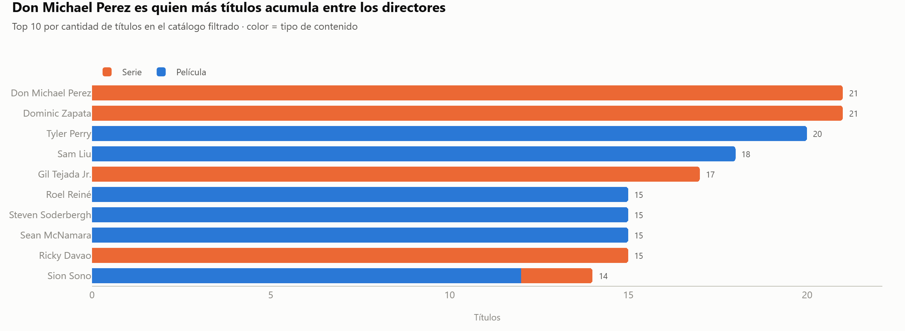
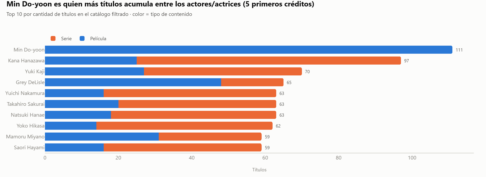
La forma de cada gráfico se eligió según el tipo de dato, la pregunta y la audiencia; el color se asignó al final y según su función (identidad, magnitud, polaridad o foco). Principios aplicados: jerarquía visual (título-hallazgo → gráfico → detalle en hover), atributos preatentivos (un color de foco sobre gris), proximidad y alineación (Gestalt), alta relación datos-tinta (grilla tenue, sin bordes ni 3D), un solo eje Y por gráfico y etiquetas directas selectivas.
| Visualización | Tipo de dato | Pregunta que responde | Por qué esta forma | Alternativa descartada |
|---|---|---|---|---|
| KPIs (tarjetas) | Cuantitativo agregado | Lectura inmediata del estado del catálogo | Un número aislado no necesita ejes; el tamaño tipográfico da jerarquía | Velocímetros (gauge): más tinta, menos precisión |
| Treemap | Jerárquico parte-todo (tipo → género) | ¿Qué géneros predominan? | El área muestra pesos relativos de 30+ categorías en un espacio compacto | Torta: ilegible con > 5 categorías |
| Barras divergentes (small multiples) | Diferencia con signo (pp) | Brecha oferta vs demanda por género | Se lee desde el 0; color de foco solo en oportunidades (atributo preatentivo) | Barras agrupadas oferta/demanda: obliga a restar mentalmente |
| Burbujas en cuadrantes | 3 variables cuantitativas | Matriz de oportunidad popularidad × calificación × oferta | Los cuadrantes traducen el gráfico en decisiones (adquirir, nicho, revisar) | Tabla: no muestra relaciones ni agrupamientos |
| Small multiples de barras | 2 métricas de escala distinta | Oferta vs popularidad por idioma | Evita el eje dual (anti-patrón) manteniendo la comparación por fila | Gráfico de doble eje Y |
| Mapa coroplético (log) | Geográfico + cantidad | ¿Qué países producen más? | Patrón espacial; escala log para que EE.UU. no anule al resto; secuencial de un tono | Mapa de burbujas: superposición en Europa |
| Barras ordenadas con anotación | Ranking + % del catálogo | ¿Qué países tienen contenido popular y poca oferta? | Se lee sin escala log: largo = popularidad, texto = oferta | Dispersión log oferta vs popularidad (versión anterior, difícil de explicar) |
| Dispersión (log) | 2 cuantitativas, n grande | Relación popularidad–calificación; presupuesto–ingresos | Muestra forma, dispersión y outliers; log por asimetría; transparencia contra sobre-impresión | Líneas de tendencia solas: ocultan la dispersión |
| Áreas apiladas 100% (3 grupos) | Composición en el tiempo | ¿Cuántos de cada 10 estrenos son Drama vs Animación/Familiar? | Volumen constante por la muestra; 3 grupos por género principal (cada título cuenta una vez) | Líneas de conteo (planas) y versión de 6 bandas (difícil de leer) |
| Líneas | Serie temporal continua | Tendencia de la calificación | La pendiente comunica dirección; 2025 marcado como incompleto | Barras por año: enfatizan valores, no tendencia |
| Mapa de calor | Matriz categoría × tiempo | Popularidad/calificación por género y año | 12 géneros × 16 años sin 'espagueti' de líneas; escala secuencial | 12 líneas superpuestas |
| Box plot (log) e histograma | Distribuciones | Diferencias películas vs series | Mediana, cuartiles y outliers en una forma compacta | Promedios en barras: ocultan la asimetría |
| Barras horizontales ordenadas | Ranking categórico | Top títulos, directores, actores, ROI por género | La longitud es el canal más preciso; etiquetas largas legibles en Y | Barras verticales con etiquetas rotadas |
| Dot plot | Comparación en rango estrecho (6–7,5) | Calificación por país | No obliga a empezar en 0, menos tinta que barras | Barras truncadas (engañosas) |
#2a78d6, serie = naranjo #eb6834, en todos los gráficos (el color sigue a la entidad).
Paleta validada computacionalmente para protanopía, deuteranopía y tritanopía (separación ΔE ≥ 9).#6250d6 sobre gris #d6d5ce para dirigir la atención a la oportunidad.La narrativa sigue los 4 pasos de la evaluación (qué ocurre → qué lo sustenta → qué limita → qué decidir), que también cubren las 4 preguntas del caso (¿qué ocurre?, ¿por qué?, ¿qué evidencia?, ¿qué decisiones?):
| Paso | Mensaje | Visualizaciones |
|---|---|---|
| 1. Qué ocurre (hallazgo principal) | Lo más ofertado no es lo más demandado: el catálogo se concentra en Drama (23% de las asignaciones de género) y en inglés (44%), mientras la popularidad apunta a Animación, Familiar, Telenovela y Latinoamérica. | Treemap, brecha oferta/demanda |
| 2. Qué lo sustenta (datos y visualizaciones) | Drama -5,1 pp de brecha; Acción y aventura +6,0 pp; Telenovela +3,4 pp; Animación con popularidad relativa 65/100 y nota 6,95 y ROI 2,3x; español con popularidad relativa 58/100 y 5,1% de oferta. Popularidad y calidad casi no se relacionan (correlación 0,23), por eso se miran juntas. | Matriz de oportunidad, dispersión, mercados, ROI |
| 3. Qué limita (sesgos, riesgos y alcance) | Popularidad TMDB ≠ consumo propio; muestra de 1.000 títulos/año; finanzas solo para 22% de las películas; sin clasificación etaria; sin datos de usuarios (no se analiza retención). | Gráfico de calidad de datos, sección 9 |
| 4. Qué decidir (recomendación e impacto) | Reasignar la adquisición hacia Animación/Familiar, Latinoamérica y Asia de calidad, con menos Drama y un portafolio de películas balanceado; seguir el impacto esperado con indicadores. | Recomendaciones (sección 10) |
Recursos aplicados: títulos-hallazgo (el lector entiende la conclusión aunque solo lea los títulos), anotaciones sobre los casos ejemplares (Get Out, Avengers: Endgame), cuadrantes con nombre de decisión, y un mismo hilo —oferta vs demanda— que conecta géneros, idiomas y mercados. Para la exposición oral se usa el mismo orden en la presentación ejecutiva (10 minutos) y el dashboard como respaldo para preguntas.
Tecnología: Python + Streamlit + Plotly (código en dashboard/app.py, gráficos en src/charts.py).
Se ejecuta con streamlit run dashboard/app.py.
| Vista (navegación por pestañas) | Contenido | Audiencia y propósito |
|---|---|---|
| 🏠 Resumen ejecutivo | 10 KPIs, 4 hallazgos dinámicos, brecha de géneros, mapa | Directorio / Gerente: estado en 30 segundos |
| 🎯 Oportunidades de adquisición | Matriz con clic → detalle del género; dispersión; tendencias; rankings intercambiables | Vista central del Gerente de Contenidos |
| 📚 Composición del catálogo | Treemap, idiomas con foco seleccionable, áreas 100%, mapa de calor, estacionalidad | Caracterización del catálogo |
| 🌎 Mercados | Mapa (volumen o popularidad), oferta vs demanda por país, calificación, tabla | Priorización de países |
| 💰 Finanzas (películas) | KPIs financieros, presupuesto vs ingresos, ROI por género y tramo, joyas | Riesgo de inversión |
| 🎬 Talento | Directores y actores más frecuentes por tipo | Negociación con estudios / talento |
| 🧾 Datos y metodología | Calidad de datos, decisiones, descarga CSV | Transparencia y confianza |
Cada página del dashboard abre con un encabezado de tres bloques —Audiencia, Pregunta que responde y Decisión que habilita— para que el usuario sepa para qué sirve antes de mirar los gráficos.
Interacción: 5 filtros globales en la barra lateral (tipo, año, género, idioma, país) que se propagan a todas las vistas y tablas; botón de restablecer; selección de burbuja con drill-down; controles segmentados para cambiar la métrica; tooltips con detalle en todos los gráficos; exportación PNG; descarga del alcance filtrado. Los títulos se recalculan con cada filtro y la línea "Alcance" indica siempre qué se está mirando.
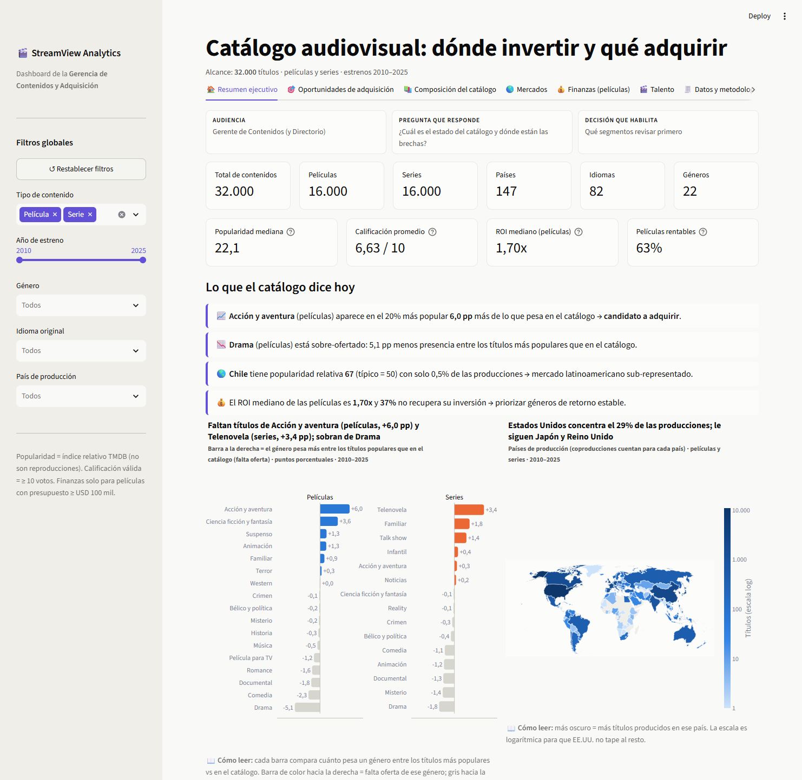
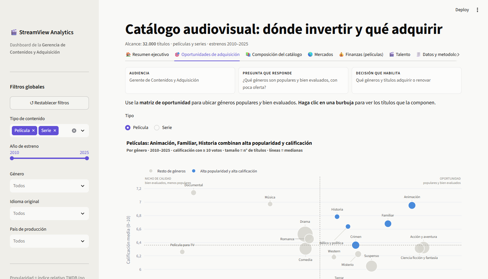
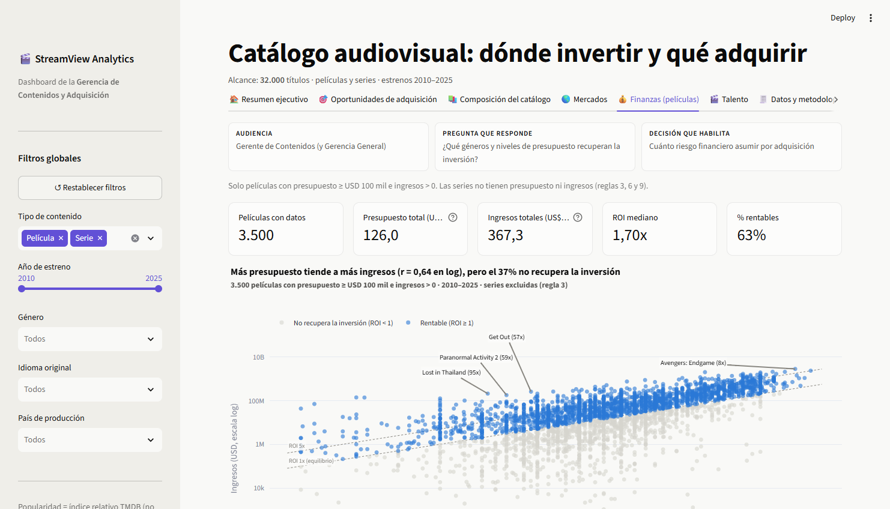
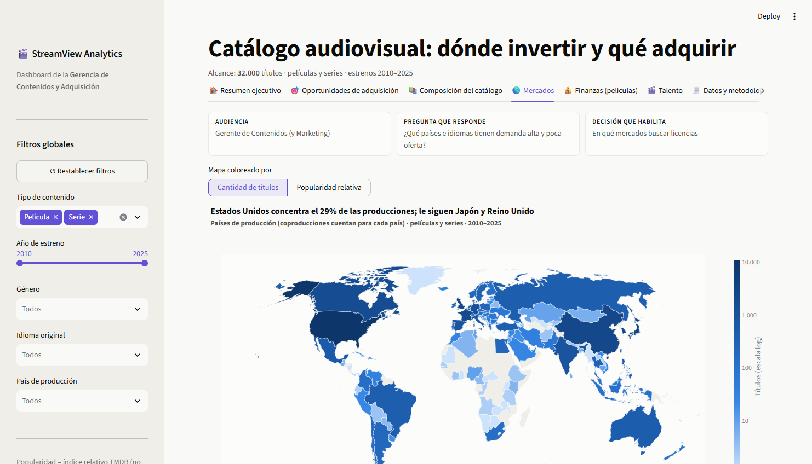
| Fortaleza | Evidencia |
|---|---|
| Foco en una audiencia y una pregunta | Todo el dashboard responde '¿qué adquirir?' para la Gerencia de Contenidos; los títulos son hallazgos, no descripciones. |
| Títulos dinámicos y siempre verdaderos | Cada título se calcula desde los datos filtrados: al cambiar un filtro, el mensaje se actualiza (no hay textos fijos que queden obsoletos). |
| Sistema visual consistente y accesible | Paleta validada para daltonismo (ΔE ≥ 9 en protanopía/deuteranopía), película = azul y serie = naranjo en los 24 gráficos, gris de contexto + un color de foco, sin ejes duales ni 3D. |
| Métricas robustas | Mediana, percentiles dentro de cada tipo, calificación con ≥ 10 votos y ponderación bayesiana; ROI mediano en vez de promedio. |
| Interacción con propósito | Filtros globales, selección de burbuja con detalle del género, rankings intercambiables, exportación PNG y descarga CSV del alcance filtrado. |
| Reproducibilidad | Pipeline en scripts (src/), notebooks ejecutados, imágenes e informe regenerables con un comando. |
| Limitación / sesgo | Riesgo | Mitigación aplicada o propuesta |
|---|---|---|
| Muestra estratificada (1.000 títulos/año/tipo) | No permite medir crecimiento real del catálogo ni comparar volúmenes entre años. | Se analiza composición y no volumen; se advierte en subtítulos. Solicitar extracto completo. |
rating duplica vote_average; duration vacía | No se pueden calcular los KPIs de clasificación etaria ni de duración que pide el caso. | Se documenta como brecha de datos; recomendación #6 a Data & Analytics. |
| Popularidad TMDB ≠ consumo en StreamView | Sesgo de fuente: mide interés global, no reproducciones de nuestros usuarios (regla 5). | Se usa como proxy relativo (percentiles) y no se afirma impacto en retención o engagement; integrar datos propios en una fase 2. |
| Sesgo de recencia | Los estrenos 2024–2025 tienen popularidad inflada y pocos votos (2025: ~8% con votos suficientes). | 2025 marcado como incompleto; percentiles dentro del tipo; umbral de votos. |
| Sesgo de supervivencia financiera | Solo 3.500 películas (22%) tienen presupuesto e ingresos válidos; suelen ser las más exitosas o conocidas. | KPIs financieros etiquetados con su universo; ROI mediano; no extrapolar a todo el catálogo. |
| Faltantes en series | 69% sin director y 11% sin país: los análisis de talento y mercado sub-representan series. | Indicado en las visualizaciones; análisis por tipo separados. |
| Taxonomía de géneros armonizada | Agrupar 'Action' y 'Adventure' pierde detalle fino. | Decisión documentada; se puede desagregar en el dashboard en una versión futura. |
Priorizadas por impacto en la decisión de adquisición y viabilidad (esfuerzo y dependencia de datos):
| Prioridad | Mejora | Fundamento técnico | Esfuerzo | Viabilidad / requisito |
|---|---|---|---|---|
| 1 · Alta | Integrar datos propios de reproducciones y suscripciones (cuando la empresa los entregue) | Reemplaza el proxy externo (popularidad TMDB) por consumo real y es el requisito para medir el impacto de las adquisiciones; hoy no están disponibles | Alto | Requiere acceso a fuentes corporativas de usuarios |
| 2 · Alta | Corregir la fuente: clasificación etaria y duración reales | Habilita los KPIs de clasificación que pide el caso; hoy rating es una copia de vote_average | Bajo | Viable: es un ajuste de extracción del equipo Data & Analytics |
| 3 · Media | Agregar el costo de licencia por título para calcular costo por punto de popularidad | El ROI de taquilla no es el retorno de StreamView; el costo de licencia sí lo es | Medio | Requiere datos del área de Adquisición |
| 4 · Media | Vista 'lista de compra': títulos candidatos de géneros y mercados prioritarios que aún no están en el catálogo | Pasa del diagnóstico a una acción concreta con los mismos filtros del dashboard | Medio | Viable con los datos actuales + un listado externo de candidatos |
| 5 · Baja | Modo oscuro validado y texturas para impresión y daltonismo severo | La paleta ya está validada; esto extiende la accesibilidad a otros contextos de uso | Bajo | Viable de inmediato |
Conclusiones. (1) El catálogo está concentrado en lo que más abunda, no en lo que más se demanda. (2) Popularidad y calidad son dimensiones casi independientes, por lo que deben evaluarse juntas. (3) Animación y Familiar son los únicos géneros que combinan alta popularidad, alta calificación y retorno financiero sobre la mediana. (4) Latinoamérica —el mercado objetivo de StreamView— está sub-representada pese a su alta popularidad relativa. (5) La calidad de los datos limita algunos KPIs del caso y debe corregirse en la fuente.
| Recomendación | Evidencia del análisis (medida) | Impacto esperado (no medido aún) | Indicador de seguimiento |
|---|---|---|---|
| Aumentar la adquisición de Animación y Familiar (películas y series) | Animación (películas): popularidad relativa 65/100 (típico = 50), calificación 6,95 y solo 4,3% de la oferta. ROI mediano 2,3x (73% rentables) y Familiar 2,2x (77%). El top 10 mejor evaluado está dominado por animación. | Más títulos en el cuadrante de oportunidad; mayor calificación media del catálogo. | % de Animación y Familiar en el catálogo; calificación media de los títulos incorporados |
| Crecer en contenido latinoamericano en español/portugués, con foco en telenovelas y reality | Español: 5,1% del catálogo pero con popularidad relativa 58/100 (sobre el típico y sobre el inglés). Telenovela: +3,4 pp de brecha, popularidad relativa 85. México (popularidad relativa 66, 1,5% de las producciones), Chile (67) y Colombia (60). | Coherente con la visión de StreamView (líder en Latinoamérica): catálogo más relevante para el mercado propio. | % del catálogo en español/portugués; brecha de Telenovela (pp) y popularidad relativa de títulos LatAm incorporados |
| Reducir la adquisición incremental de Drama y reasignar ese presupuesto | Drama es el género más ofertado pero está sub-representado entre los más populares (-5,1 pp en películas, -1,8 pp en series). ROI mediano 1,3x, solo 56% rentables. | Libera presupuesto para las recomendaciones 1 y 2 sin aumentar el gasto total. | % de Drama en las nuevas adquisiciones; brecha de Drama (pp) |
| Mantener un pipeline asiático de calidad (Japón y Corea del Sur) | Mejor calificación media entre los 15 mayores productores: Japón 7,22, Corea del Sur 7,10. Actores de voz de anime dominan el ranking de frecuencia. | Sostiene la calificación media del catálogo con los productores mejor evaluados. | Calificación media de títulos de Japón y Corea del Sur incorporados |
| Portafolio de películas balanceado: blockbusters para estabilidad + apuestas de bajo presupuesto en terror/misterio | El 85% de las películas > USD 60 M recupera su inversión vs 59% de las < USD 5 M; pero las 'joyas' de bajo presupuesto logran ROI de 20x–95x (Get Out, Insidious, Lights Out). | Controla el riesgo (37% de películas no recupera la inversión) sin renunciar a alto retorno. | % de películas adquiridas con ROI ≥ 1 y ROI mediano del portafolio |
| Exigir a la fuente clasificación etaria y duración y sumar datos propios de consumo | Hoy no es posible calcular los KPIs de clasificación del caso; la popularidad es un proxy externo. | Habilita los KPIs de clasificación del caso y, cuando existan datos de usuarios, medir consumo real en vez de un proxy. | % de registros con clasificación etaria y duración válidas |
| Comando | Resultado |
|---|---|
python src/prepare_data.py | Integra y limpia los datos → data/processed/ |
python src/export_images.py | Regenera las 24 visualizaciones → images/ |
python src/build_notebooks.py | Ejecuta los notebooks de calidad y EDA → notebooks/ |
python src/build_report.py | Genera este informe → reports/ |
streamlit run dashboard/app.py | Abre el dashboard interactivo |